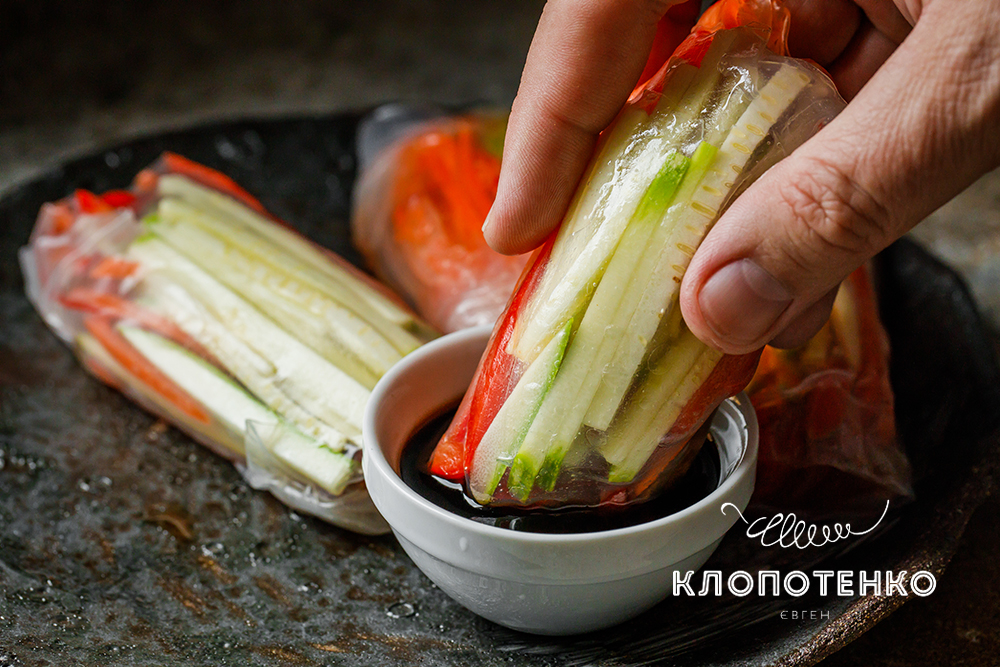
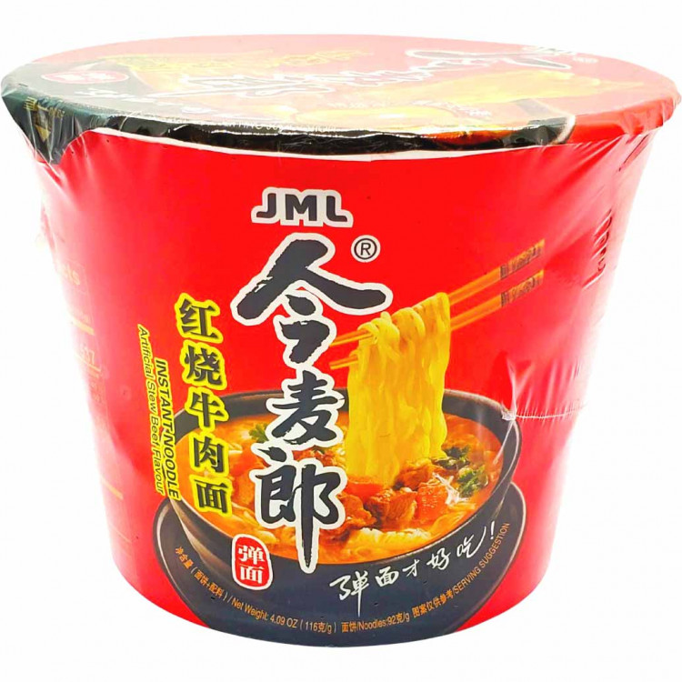

Цікаві факти
- Китай вважається найбільш густонаселеним державою світу.
- У давньокитайських календарях рік починався з першого молодика після зимового сонцестояння.
- Стародавні китайці винайшли лак, Їм вони покривали взуття та дерев'яні вироби для захисту від намокання.


їжа
Сичуаньський самовар хоґо (китайський спосіб приготування гарячих страв з овочів, м'яса та ін.) 四川火>

- мінімум калорій – багато смаку! азійські спрінг роли з тофу і овочами> 
- 拉麺, 柳麺) — страва японської кухні з пшеничною локшиною.>
Цікаві факти
- літній дворець.
- велика китайська стіна.
- заборонене місто.